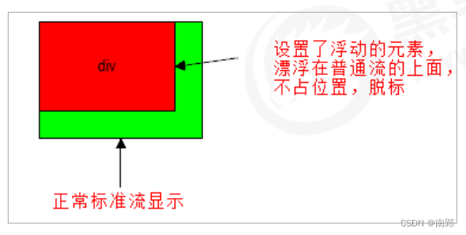

网页布局过程：
- 准备网页元素，网页元素基本都是盒子 box
- 利用 CSS 设置好盒子样式，然后摆放到相应位置。
- 往盒子里放东西。
网页布局的核心本质：利用 CSS 摆盒子。
CSS 提供了三种传统布局方式：
- 普通流（标准流）
- 浮动
- 定位
所谓的标准流，就是标签按照规定好的默认方式排列（最基本的布局方式）。
- 块级元素会独占一行，从上到下顺序排列 常用元素：div、hr、p、h1-h6、ul、ol、dl、form、table
- 行内元素会按照顺序，从左到右顺序排列，碰到父元素边缘则自动换行。 常用元素：span、a、i、em
一、盒子模型
1. 盒子模型的组成
CSS 盒子模型本质上是一个盒子，封装周围的 HTML 元素。
包括：边框、外边距、内边距和实际内容。

2. 边框（border）
border 可以设置元素边框。边框有三个组成：border-width、border-style、border-color
语法：
/*属性可连写*/
border: border-width || border-style || border-color;| 属性 | 作用 |
|---|---|
| border-width | 定义边框粗细，单位 px |
| border-style | 边框样式：none(默认无边框)、solid(单实线)、dashed(虚线)、dotted(点线) |
| border-color | 边框颜色 |
边框属性分写：
/*注意层叠性*/
border-top: 1px solid red;2.1 表格的边框合并
border-collapse 属性控制浏览器绘制表格边框的方式。它可以使相邻单元格的边框合并在一起。
语法：
border-collapse: collapse;2.2 圆角边框
CSS3 新增 圆角边框 属性，盒子可以变成圆角。
border-radius 属性用于设置元素的外边框圆角。
语法：
border-radius: length;原理：
（椭）圆与边框的交集形成的圆角效果。
参数：
- 参数值可以为数值或百分比的形式
- 若是正方形，想要设置一个圆，则将数值修改为高度或者宽度的一般即可，或者直接写为 50%
- 简写属性，跟四个值，分别代表左上角、右上角、右下角、左下角
- 分开来写：
border-top-left-radius、border-top-right-radius、border-bottom-right-radius、border-bottom-left-radius
2.3 边框会影响盒子大小
边框会额外增加盒子的实际大小，因此有两种方案解决。
- 测量盒子大小的时候，不量边框。
- 若测量的时候包含了边框，则需要 width/height-边框宽度。
3. 内边距（padding）
padding 属性设置内边距，即边框与内容之间的距离。
padding-left: 左内边距padding-right: 右内边距padding-top: 上内边距padding-bottom: 下内边距
padding 属性简写：
| 值的个数 | 表达意思 |
|---|---|
| padding: 5px; | 上下左右5 |
| padding: 5px 10px; | 上下5 左右10 |
| padding: 5px 10px 20px; | 上5 左右10 下20 |
| padding: 5px 10px 20px 30px; | 上5 右10 下20 左30 |
3.1 内边距会影响盒子大小
当给盒子指定了 padding 值以后，发生了两件事情：
- 内容和边框有了距离，增加内边距
- padding 值影响了盒子实际大小
也就是说，当盒子已经有了宽度和高度，再指定内边距，会撑大盒子。（如何盒子本身没有指定width/height属性, 则此时padding不会撑开盒子大小）
要保证盒子和效果图一样大，则让 width/height-多出来的内边距大小。
4. 盒子大小变动解决方案
在设置了一个盒子的 width/height 后，再设置其 border/padding 会影响盒子实际大小。当进行响应式布局时，这个尤其烦人。
box-sizing 属性可以被用来调整这些表现。
content-box是默认值。如果你设置一个元素的宽为100px，那么这个元素整体会有100px宽，并且任何边框和内边距的宽度都会被增加到最后绘制出来的元素宽度中。box-sizing: content-box;border-box告诉浏览器：你想要设置的边框和内边距的值是包含在width内的。也就是说，如果你将一个元素的width设为100px，那么这100px会包含它的border和padding，内容区的实际宽度是width减去(border + padding)的值。大多数情况下，这使得我们更容易地设定一个元素的宽高。box-sizing: border-box;尺寸计算公式：
width = border + padding + 内容的宽度、height = border + padding + 内容的高度
5. 外边距（margin）
margin 属性用于设置外边距，即控制盒子与盒子之间的距离。
margin-left: 左外边距margin-right: 右外边距margin-top: 上外边距margin-bottotm: 下外边距
margin 简写方式与 padding 一致。
5.1 外边距典型应用
外边距可以让块级盒子 水平居中，但是必须满足两个条件：
- 盒子必须指定宽度（width）
- 盒子左右的外边距都设置为
auto
.header {
width: 960px;
margin: 0 auto;
}5.2 外边距合并
使用 margin 定义块元素的垂直外边距时，可能会出现外边距的合并。
5.2.1 上下相邻块元素垂直外边距的合并
当上下相邻块元素相遇时，若上面的元素有下外边距，下面的元素有上外边距，则他们之间的垂直间距不是 margin-bottotm 与 margin-top 之和。取两个值中的较大者这种现象被称为相邻元素垂直外边距的合并。
解决方案：尽量只给一个盒子添加margin值。
![[Pasted image 20221209144024.png]]
5.2.2 嵌套块元素垂直外边距的塌陷
对于两个嵌套关系的块元素，父元素有上外边距同时子元素也有上外边距，此时父元素会塌陷较大的外边距值。
解决方案：
- 为父元素定义上边框
- 为父元素定义上内边距
- 为父元素添加
overflow:hidden

6. 清除内外边距
网页元素很多都带有默认内外边距，而且不同浏览器默认的也不一致，因此在布局前，要先清除网页元素的内外边距。
语法：
* {
margin: 0;
padding: 0;
}注意：行内元素为了照顾兼容性，尽量只设置左右内外边距，不要设置上下内外边距（不起效果）。但是转换为块级和行内块元素就可以设置。
7. 盒子阴影
CSS3 新增盒子阴影，使用 box-shadow 属性。
语法
bxo-shadow: h-shadow v-shadow blur spread color inset;| 值 | 描述 |
|---|---|
| h-shadow | 必需，水平阴影的位置，允许负值 |
| v-shadow | 必需，垂直阴影的位置，允许负值 |
| blur | 可选，模糊距离 |
| spread | 可选，阴影的尺寸 |
| color | 可选，阴影的颜色 |
| inset | 可选，将外部阴影改为内部阴影（默认是外部阴影） |
box-shadow: 10px 10px 10px -4px rgba(0, 0, 0, .3);注意：
- 默认是外阴影，但是不可以写这个单词（outset）
- 盒子阴影不占空间，不会影响其他盒子排列
二、浮动
1. 浮动相关概念
1.1 为什么需要浮动
如何让多个块级盒子(div)水平排列成一行？
比较难，虽然转换为行内块元素可以实现一行显示，但是他们之间会有大的空白缝隙，很难控制。如何实现两个盒子的左右对齐？
总结：很多布局效果，标准流没办法完成，此时就可以利用浮动完成布局。浮动可以改变元素标签默认排列方式。
浮动最典型应用：让多个块级元素一行显示。
网页布局第一准则：多个块级元素纵向排列找标准流，多个块级元素横向排列找浮动。
网页布局第二准则：先设置盒子大小，再设置盒子位置。
1.2 什么是浮动
float 属性用于创建浮动框，将其移动到一边，直到左边缘或右边缘及包含块或另一个浮动框的边缘。
语法：
选择器 { float: 属性值; }| 属性值 | 描述 |
|---|---|
| none | 元素不浮动 |
| left | 元素向左浮动 |
| right | 元素向右浮动 |
1.3 浮动特性（重点）
加了浮动之后的元素，会具有一些特性。
- 浮动元素会脱离标准流（脱标）
- 浮动元素会一行内显示并且元素顶部对齐
- 浮动的元素会具有行内块元素的特性
1.3.1 重要特性
脱离文档流的控制（浮）移动到指定位置（动）（俗称脱标）。浮动的盒子不再保留原先的位置。
如果多个盒子都设置了浮动，则它们会按照属性值一行显示并且顶端对齐排列。 浮动的元素是相互贴在一起的（没有间隙），若父级宽度放不下这些浮动的盒子，多出的盒子会另起一行对齐。
浮动元素具有行内块元素特性。 任何元素都可以浮动，元素添加浮动后都具有行内块元素性质。
- 若块级元素没有设置宽度，则默认和父级一样宽。但添加浮动后，大小根据内容来决定
- 浮动盒子中间无间隙，紧挨着
- 行内块元素同理
1.3.2 浮动布局注意点
1. 浮动和标准流的父盒子搭配
先用标准流的父元素排列上下位置，之后内部子元素采取浮动排列左右位置。
2. 一个元素浮动了，理论上其余兄弟元素也要浮动
一个盒子里有多个盒子，其中一个盒子浮动，其他兄弟也应该浮动，防止引起问题。
浮动的盒子只会影响浮动盒子后面的标准流，不会影响前面的标准流。
2. 清除浮动
2.1 为什么需要清除浮动
由于父级盒子很多情况下，不方便给高度（产品可能有很多很多；新闻页面不知道有多少字不方便给高度）。
盒子浮动不占有位置，若父级盒子高度为 0 时，就会影响下面的盒子，对后面元素排版产生影响。
2.2 清除浮动的本质
- 清除浮动的本质是清除浮动元素造成的影响
- 如果父盒子本身具有高度，则不需要清除浮动
- 清除浮动之后，父级会根据浮动的子盒子自动检测高度，父级有了高度，就不会影响下面的标准流了。
语法：
选择器 {
clear: 属性值;
}| 属性值 | 描述 |
|---|---|
| left | 不允许左侧有浮动元素 |
| right | 不允许右侧有浮动元素 |
| both | 同时清除左右两侧浮动 |
| 清除浮动策略：闭合浮动 |
2.3 清除浮动的方法
2.3.1 额外标签法（隔墙法）
额外标签法是在最后一个浮动元素末尾添加一个空块级元素，给其赋以属性 clear: both;。(不常用)
语法：
<style>
.clear {
clear: both;
}
</style>
<div class="clear"></div>- 优点：通俗易懂，书写方便
- 缺点：添加许多无意义的标签，结构化差
2.3.2 父级添加 overflow 属性
可以给父级添加 overflow 属性，将其属性设置为 hidden、auto或scroll。
注意是给父元素添加代码：
.box {
overflow: hidden;
}- 优点：代码简洁
- 缺点：无法显示溢出部分
2.3.3 :after 伪元素法
:after 方式是额外标签法的升级版。给父元素添加（常用）
.clearfix:after {
content: "";
display: block;
height: 0;
clear: both;
visibility: hidden;
}
.clearfix {
/*IE6、7专有*/
*zoom: 1;
}优点：没有增加标签，结构更简单
2.3.4 双伪元素清除浮动
给父元素添加（常用）
.clearfix:before,
.clearfix:after {
content: "";
display: table;
}
.clearfix:after {
clear: both;
}
.clearfix {
*zoom: 1;
}3. 学成在线案例
3.1 CSS属性书写顺序
3.2 页面布局分析
为了提高网页制作的效率，布局时通常有以下的布局流程：
- 必须确定页面的版心（可视区），我们测量可得知。
- 分析页面中的行模块，以及每个行模块中的列模块。其实页面布局，就是一行行罗列而成的。
- 制作 HTML 结构。我们还是遵循，先有结构，后有样式的原则。结构永远最重要。
- 开始运用盒子模型的原理，通过 div+css 布局来控制网页的各个模块。
3.3 注意点
导航栏注意点：
实际开发中，不会直接用链接 a 而是用 li 包含链接（li+a）的做法。
li+a 语义更清晰，一看就是有条理的列表型内容。
如果直接用 a，搜索引擎容易辨别为有堆砌关键字嫌疑（故意堆砌关键字容易被搜索引擎有降权的风险），从而影响网站排名。
让导航栏一行显示，给
li加浮动，因为 li 是块级元素，需要一行显示。这个 nav 导航栏可以不给宽度，将来可以继续添加其余文字。
因为导航栏里面文字不一样多，所以最好给链接 a 左右 padding 撑开盒子，而不是指定宽度。
其他注意点：
浮动的盒子不会出现外边距合并的问题。
注意元素的显示模式（块级、行内、行内块），必要时进行模式转换。
若添加了margin导致5个盒子无法在父元素的一行显示、一个盒子到下一行显示的问题时，直接增加父元素的宽度即可。
三、定位
1. 为什么需要定位
在一些场景，我们希望实现以下功能：
- 某个元素可以自由的在一个盒子内移动位置，并且压住其他盒子
- 当我们滚动窗口的时候，盒子是固定屏幕某个位置的。
以上效果，标准流或浮动都无法快速实现，此时需要定位来实现。 所以：
- 浮动可以让多个块级盒子一行没有缝隙排列显示， 经常用于横向排列盒子。
- 定位则是可以让盒子自由的在某个盒子内移动位置或者固定在屏幕中某个位置，并且可以压住其他盒子。
2. 定位组成
定位：将盒子定在某一个位置，所以定位也是在摆放盒子，按照定位的方式移动盒子。定位=定位模式+边偏移。
定位模式用于指定一个元素在文档中的定位方式。边偏移则决定了该元素的最终位置。
2.1 定位模式
定位模式决定元素的定位方式，它通过 CSS 的 position 属性来设置，其值可以分为四个值：
| 值 | 语义 |
|---|---|
| static | 静态定位 |
| relative | 相对定位 |
| absolute | 绝对定位 |
| fixed | 固定定位 |
2.2 边偏移
边偏移就是定位的盒子移动到最终位置。有 top， bottom， left 和 right 4 个属性
注意：如果一个盒子既有left属性又有right属性，则默认会执行left属性。同理top和bottom默认会执行top。
| 边偏移属性 | 示例 | 描述 |
|---|---|---|
| top | top:80px |
顶端偏移量，定义元素相对于其父元素上边线的距离。 |
| bottom | bottom: 80px |
底部偏移量，定义元素相对于其父元素下边线的距离。 |
| left | left： 80px |
左侧偏移量，定义元素相对于其父元素左边线的距离。 |
| right | right: 80px |
右侧偏移量，定义元素相对于其父元素右边线的距离。 |
3. 定位模式介绍
3.1 静态定位 static（了解）
静态定位是元素的默认定位方式，无定位的意思。语法：
选择器 {
position: static;
}静态定位按照标准流特性摆放位置，它没有边偏移，在布局时很少用到。
3.2 相对定位 relative（重要）
相对定位是元素在移动位置的时候，是相对于它原来的位置来说的（自恋型）。
语法：
选择器 {
position: relative;
}相对定位的特点：（务必记住）
它是相对于自己原来的位置来移动的（移动位置的时候参照点是自己原来的位置）。
原来在标准流的位置继续占有，后面的盒子仍然以标准流的方式对待它。（不脱标，继续保留原来位置。它最典型的应用是给绝对定位当爹。）
3.3 绝对定位 absolute（重要）
绝对定位是元素在移动位置的时候，是相对于它祖先元素来说的（拼爹型）。
语法：
选择器 {
position: absolute;
}绝对定位的特点： （务必记住）
如果 没有祖先元素 或者 祖先元素没有定位，则以 浏览器 为准定位（ Document 文档）。
如果祖先元素有定位（相对、绝对、固定定位） ，则以最近一级的有定位祖先元素为参考点移动位置。
绝对定位不再占有原先的位置。（脱标）
3.3.1 子绝父相
子级绝对定位，不占有位置，可以放到父盒子里面的任何一个地方，不会影响其他的兄弟盒子。
父盒子需要加定位限制子盒子在父盒子内显示。
父盒子布局时，需要占有位置，因此父亲只能是相对定位。
这就是子绝父相的由来，所以相对定位经常用来作为绝对定位的父级。
总结：因为父级需要占有位置，因此是相对定位，子盒子不需要占有位置，则是绝对定位
当然，子绝父相不是永远不变的，如果父元素不需要占有位置，子绝父绝也会遇到。
3.4 固定定位 fixed （重要）
固定定位是元素固定于浏览器可视区的位置。主要使用场景：可以在浏览器页面滚动时元素的位置不会改变。
语法：
选择器 {
position: fixed;
}固定定位的特点： （务必记住）
- 以浏览器的可视窗口为参照点移动元素。
- 跟父元素没有任何关系
- 不随滚动条滚动
- 固定定位不占有原先的位置。 固定定位也是脱标的，其实固定定位也可以看做是一种特殊的绝对定位。
固定定位小技巧：固定在版心右侧位置。
- 让固定定位的盒子 left：50%，走到浏览器可视区（也可以看做版心）的一半位置。
- 让固定定位的盒子 margin-left：板心宽度的一半距离。多走版心宽度的一半位置就可以让固定定位的盒子贴着版心右侧对齐了
3.5 粘性定位 sticky（了解）
粘性定位可以被认为是相对定位和固定定位的混合。
应用：滑动到元素所在定义位置（如top: 10px表示滑动到浏览器可视窗口距元素10px）后，继续下滑时元素固定。
语法：
选择器 {
position: sticky;
top: 10px;
}粘性定位的特点：
- 以浏览器的可视窗口为参照点移动元素（固定定位特点）
- 粘性定位占有原先的位置（相对定位特点）
- 必须添加 top， left， right， bottom 其中一个才有效跟页面滚动搭配使用。兼容性较差， IE 不支持。
3.6 定位模式总结
| 定位模式 | 是否脱标 | 移动位置 | 是否常用 |
|---|---|---|---|
| static静态定位 | 否 (占有位置) | 不能使用边偏移 | 很少 |
| relative相对定位 | 否 (占有位置) | 相对于自身位置移动 | 常用 |
| absolute绝对定位 | 是 (不占有位置) | 带有定位的父级 | 常用 |
| fixed固定定位 | 是 (不占有位置) | 浏览器可视区 | 常用 |
| sticky粘性定位 | 否 (占有位置) | 浏览器可视区 | 当前阶段少 |
4. 定位的拓展
4.1 定位叠放次序 z-index
在使用定位布局时，可能会出现盒子重叠的情况。此时，可以使用 z-index 来控制盒子的前后次序（z 轴）
语法：
选择器 {
z-index: 1;
}- 数值可以是正整数、负整数或 0，默认是 auto ，数值越大，盒子越靠上
- 如果属性值相同，则按照书写顺序，后来居上
- 数字后面不能加单位
- 只有定位的盒子才有
z-index属性
4.2 绝对定位的盒子居中
加了绝对定位的盒子不能通过 margin：0 auto 水平居中，但是可以通过以下计算方法实现水平和垂直居中。
left: 50%;：让盒子的左侧移动到父级元素的水平中心位置。margin-left: -100px;：让盒子向左移动自身宽度的一半。
4.3 绝对定位和固定定位的特殊特性
4.3.1 元素模式转换
绝对定位和固定定位也和浮动类似。添加后变为行内块元素。
- 行内元素添加绝对或者固定定位，可以直接设置高度和完度。
- 块级元素添加绝对或者固定定位，如果不给宽度或者高度，默认大小是内容的大小。
4.3.2 不会触发外边距合并
浮动元素、绝对定位/固定定位的元素 都不会触发外边距合并的问题。
4.3.3 完全压住盒子
浮动元素不同，只会压住它下面标准流的盒子，但是不会压住下面标准流盒子里面的文字（图片）
因为浮动产生的目的最初是为了做文字环绕效果的。文字会围绕浮动元素。
绝对定位（固定定位）会压住下面标准流所有的内容。
5. 网页布局总结
通过盒子模型，清楚知道大部分 html 标签是一个盒子。
通过 CSS 浮动、定位可以让每个盒子排列成为网页。
一个完整的网页，是标准流、浮动、定位一起完成布局的，每个都有自己的专门用法。
1. 标准流
- 可以让盒子上下排列或者左右排列，垂直的块级盒子显示就用标准流布局。
2. 浮动 - 可以让多个块级元素一行显示或者左右对齐盒子，多个块级盒子水平显示就用浮动布局。
3. 定位 - 定位最大的特点是有层叠的概念，就是可以让多个盒子前后叠压来显示。如果元素自由在某个盒子内移动就用定位布局。
6. 元素的显示与隐藏
类似网站广告，当我们点击关闭就不见了，但是我们重新刷新页面，会重新出现！
本质：让一个元素在页面中隐藏或者显示出来。
6.1 display 属性
display 属性用于设置一个元素应如何显示。
display: none;隐藏对象display: block;除了转换为块级元素之外，同时还有显示元素的意思。
display 隐藏元素后，不再占有原来的位置。
后面应用及其广泛，搭配 JS 可以做很多的网页特效。
6.2 visibility 可见性
visibility 属性用于指定一个元素应可见还是隐藏。
visibility: hidden;元素隐藏visibility: visible;元素可视
visibility 隐藏元素后，继续占有原来的位置。
如果隐藏元素想要原来位置，就用 visibility：hidden
如果隐藏元素不想要原来位置，就用 display：none （用处更多，重点）
6.3 overflow 溢出
overflow 属性指定了如果内容溢出一个元素的框（超过其指定高度及宽度）时，会发生什么。
| 属性值 | 描述 |
|---|---|
| visible | 不剪切内容也不添加滚动条 |
| hidden | 不显示超过对象尺寸的内容，超出的部分隐藏掉 |
| scroll | 不管是否超出内容，总是显示滚动条 |
| auto | 超出则自动显示滚动条，不超出不显示滚动条 |
一般情况下，我们都不想让溢出的内容显示出来，因为溢出的部分会影响布局。但是如果有定位的盒子，请慎用 overflow: hidden 因为它会隐藏多余的部分。